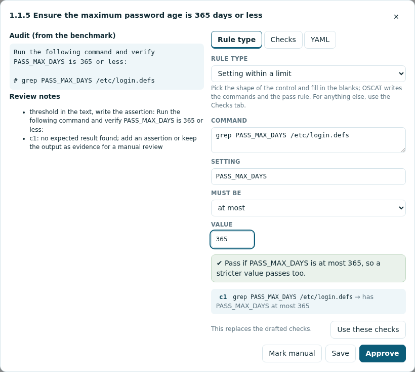
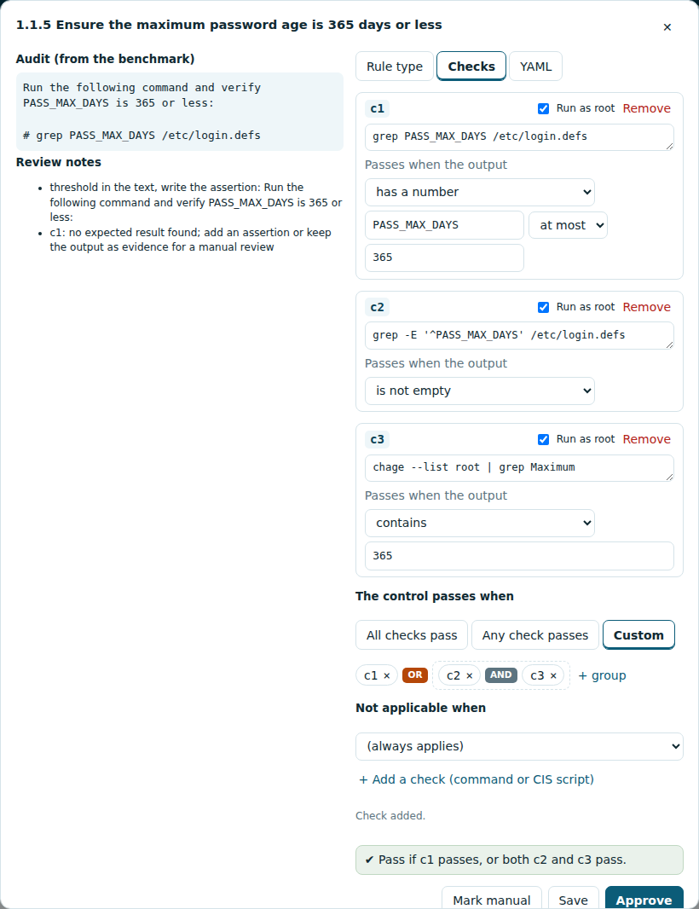

Importing a CIS benchmark PDF
CIS publishes each benchmark as a PDF. OSCAT turns that PDF into a benchmark you can scan with straight away, without internet access. Every control is drafted from the PDF and marked needs review so you know which to check; reviewing them is optional and can be done whenever you like.
What you get
- OSCAT finds every control in the PDF with its CIS fields: title, profile applicability, description, rationale, impact, audit, remediation, default value and references.
- For each control it drafts the checks from the benchmark's audit instructions.
- Each draft gets a confidence and review notes that say what was unsure, such as a threshold written in words or a value that depends on your site's policy.
- Commands that the PDF splits over two lines are joined back with their spaces intact. If a drafted command still isn't valid shell, its review note says so, so you can compare it with the PDF before approving it.
- The draft follows how CIS controls usually decide pass or fail:
| The benchmark says | The draft passes when |
|---|---|
| "- OR -" between two ways to comply (for example the package is not installed, or its service is disabled and stopped) | either way holds |
| "If nothing is returned, no further audit steps are required" | the first check passes, or the remaining ones all do |
| "4 or less", "7 or more", "no more than 45" | the number in the output is within the limit, so stricter settings pass too |
| "mode 640 or more restrictive", owner and group | the file mode has no extra permission bits and the owner and group are the ones allowed |
| a kernel parameter "is set to 0" | the running value and the value in the file that systemd uses are both correct |
a value written as <version> or {n} |
the line is there with any value in that place |
Each of these adds a review note saying what the draft decided. - Optionally, a local AI model on the jumphost improves the less certain drafts. - Every imported control starts marked needs review, so scan reports flag its results as unreviewed until someone approves the drafted check. The benchmark is still ready to scan the moment it is added.
On the CIS Ubuntu 22.04 and SUSE 15 benchmarks OSCAT finds every control (306 and 286) and drafts about a third of them with high confidence.
Windows benchmarks
CIS Windows benchmarks describe settings as Group Policy paths rather than shell commands, so OSCAT drafts them a different way: it reads the registry location, security-policy setting, user-right or audit-policy subcategory out of each control and turns it into the matching Windows check, with the expected value as the pass rule. These controls need no scripting and most draft with high confidence. A few — an account list for a user right, or a setting OSCAT cannot map — keep the check so the value is still collected and ask you to set the pass rule in review. Windows settings show in the Checks tab as a read-only line naming what is read (for example Registry HKLM\...\Name); edit the target in the YAML tab if needed.
In the web app
- On the Benchmarks page, click Add benchmark and choose the PDF (up to 60 MB and 3,000 pages). The server reads it in a separate process, which it stops after 30 minutes, and then deletes the file.
- OSCAT drafts a check for every recommendation and publishes the benchmark as soon as it finishes, so you can scan with it straight away. The Benchmarks page shows how many of its controls still need review.
- To review, open the benchmark's Review link. Controls are listed least certain first, with their confidence, number of checks and review notes, so the top of the list is the handful that most need a look — most controls further down score higher. A low confidence never stops you scanning; it only marks a draft as worth checking. For more accurate drafts, set up the optional local model.
- Open a control: the benchmark's audit text is on one side, the drafted pass rule on the other (see Setting the pass rule). Fix it if needed, then: - Save keeps your edit and leaves the control for review; - Approve marks it reviewed; - Mark manual makes it a manual control (approved).
Each edit updates the published benchmark in place, keeping the same controls, so saved control sets and past scans stay valid. Review as much or as little as you like, whenever you like.
Setting the pass rule
The right-hand side has three tabs. The green line under them always says, in words, when the control passes.
Rule type covers the shapes most CIS controls follow. Pick one, fill in the blanks, and click Use these checks: OSCAT writes the commands and the rule. When the drafted checks already have one of these shapes, the tab opens with it picked and filled in.
| Rule type | You fill in | Passes when |
|---|---|---|
| Service not in use | package, units, package tool | the package is not installed, or every unit is not enabled and not active |
| Kernel module not available | module | the module is not on disk, or it is not loaded and is blacklisted with install /bin/false |
| Mount option set | mount point, options | the mount point is not a separate partition, or it has the options |
| Separate partition | mount point | the mount point is a partition of its own |
| Setting within a limit | command, setting, at most / at least / exactly, value | the setting's number is within the limit, so stricter values pass |
| File permissions | file, mode, owner, group, what a missing file means | the mode is that or more restrictive and the owner and group are allowed |
| Kernel parameter | parameter, allowed values | the running value and the last value systemd sets from its sysctl.d files are allowed |
| CIS audit script | the script | the script prints ** PASS ** |

Checks shows each check: its command, Run as root, and Passes when the output:
is empty, is not empty, contains, does not contain, has a line equal to, has no line equal
to, is exactly, matches a pattern, has a number at most / at least / exactly, has
permissions at most, comes with an exit code, or shows ** PASS **. Under the checks:
- The control passes when: all checks pass, any check passes, or Custom. Custom builds the rule from checks and groups: click AND or OR to switch it, + group to add a group, and × to take a check out. A check that is not part of the rule is pointed out, because it doesn't count.
- Not applicable when: pick a check that decides whether the control applies, for example "c1 fails" when c1 looks for the package the control is about.

YAML is the same control as text, for anything the other tabs don't cover.
When a control has no checks
Sometimes OSCAT cannot find the command in the PDF, for example when the benchmark's audit is a long script. The control then opens with a script box on the Checks tab (in other controls, click + Add a check (command or CIS script)):
- Copy the script from the Audit box on the left, from
#!/usr/bin/env bashto the last line, or a single command, and paste it into the script box. Text copied straight from the PDF works too: OSCAT removes blank lines, page footers, curly quotes and dashes, and joins lines the PDF broke before|,&&,||or2>. - Leave The host passes when the output contains as
** PASS **: CIS scripts print that when the host complies. For a single command, type the text its output must contain, or leave it empty to keep the output as evidence for a manual review. - Keep Run as root ticked unless the command works for any user, and click Add check.
- Read the new check (OSCAT says how many lines it joined), then Approve.
If a script still cannot be used, Mark manual keeps the control as a manual check.
From the command line
oscat import-pdf CIS_Ubuntu_Linux_22.04_LTS_Benchmark_v3.0.0.pdf -o profiles/ubuntu-22.04
It prints how many controls it found, how many were drafted with high, medium and low confidence, and which to review first. Useful options:
| Option | Meaning |
|---|---|
--llm ollama --model qwen2.5:14b |
let a local model complete uncertain drafts |
--ollama-url URL |
where Ollama listens (default http://127.0.0.1:11434) |
--refine-below 0.8 |
ask the model about drafts below this confidence |
--pages 20-120 |
only these pages |
-c 5.2.1 |
only this control (repeatable) |
--id, --title |
the profile's id and title |
Then review the YAML, set review: approved on the controls you checked, and
oscat validate it.
Setting up the local model
The model is not part of the OSCAT download — it is optional, and without it the rules still draft every control. You install and run it separately. On an air-gapped jumphost:
- On a connected machine: install Ollama and
ollama pull qwen2.5:7b. - Copy the Ollama installer and
~/.ollama/modelsto the jumphost and start Ollama. - In the settings file set
OSCAT_IMPORT_LLM=ollamaandOSCAT_IMPORT_MODEL=qwen2.5:7b, and restart OSCAT.
| Jumphost | Model |
|---|---|
| 12 GB RAM, no GPU | qwen2.5:7b (slow but works) |
| 16 to 24 GB RAM or a GPU | qwen2.5:14b drafts better |
Licensing
A profile imported from a CIS PDF contains benchmark text, which CIS licenses. Keep these profiles, and reports made with them, inside your organisation.
Converting OSCAT v1 scripts
oscat import-legacy --scripts <folder of control .sh files> --id ... --title ... -o <folder>
turns OSCAT v1 audit scripts (and optionally its control spreadsheet) into a profile, with
every control marked for review.